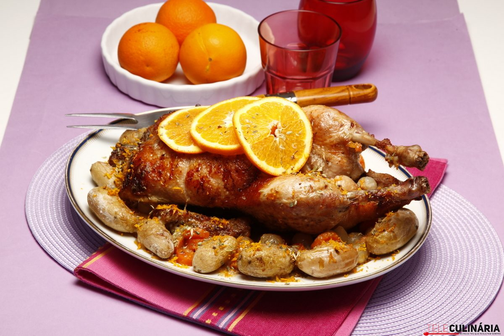

Receita: Pato com laranja
Modo de preparo

Foto do pato com laranja (Foto: Luídi)
Destaque as batatas e cozinhe até ficarem al dente.
Ingredientes
Arquivo anterior
- 1 pato inteiro limpo
- 500g batata pequena
- Suco de 3 laranjas
- Suco de 1 limão
- 100g açucar
- 12 xícaras de óleo
- Pimenta-do-reino
- Sal
- 20g de salsinha picadas
Google